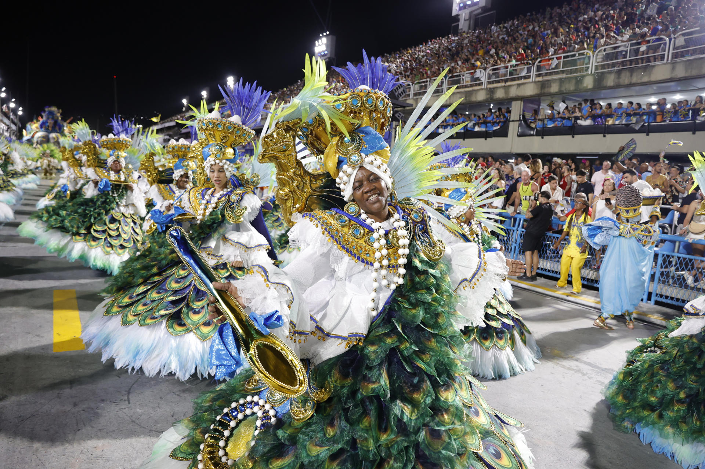

La cultura de Brasil
La cultura de Brasil es una mezcla de influencias indígenas, africanas y europeas. Se caracteriza por su diversidad, alegría y espíritu festivo.
La música y la danza son muy importantes en Brasil.
El samba es un baile rítmico y vivo de origen afrobrasileño.
Lo más destacado de Brasil son los carnavales, siendo así el "Carnaval de Río de Janeiro" el más famoso del mundo.
La gastronomía brasileña es variada y deliciosa, con platos típicos como la feijoada, el acarajé y la caipirinha.


La tradición y festividad más importante de Brasil es el Carnaval, que dura cuatro días antes de la Cuaresma. El Carnaval en Brasil es la combinación tradicional de una festividad católica romana con las animadas celebraciones de las personas de ascendencia africana

La música tradicional de Brasil es una combinación de ritmos africanos, europeos, americanos y amerindios.
La samba es el ritmo más conocido y popular de Brasil, pero también hay otros géneros como la bossa nova, el forró y el axé.
En la samba una de las canciones más exitosas dentro del genero es la llamada "La vida es un Carnaval"
En el bossanova una de las canciones más exitosas es "Águas de março"
Como dato, hace poco Brasil se hizo ganador de su primer premio oscar en la historia del país, con la pelicula "Aún estoy aquí."